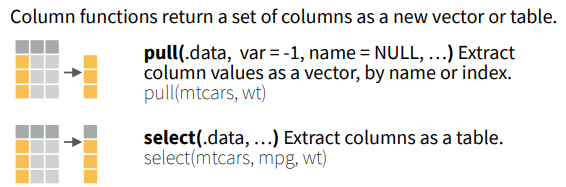
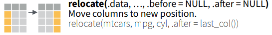
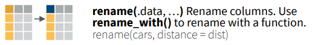
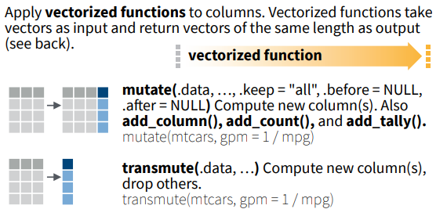

3. Manipulating Columns
| Select columns | select(), pull() |
| Arrange columns | relocate() |
| Rename columns | rename() |
| Add columns | mutate(), transmute() |
Follow along with the code in section (3) of the R script. We will walk through each function with the visual explanations from the dplyr cheat sheet.
3.1 Select columns with select() and pull()
Goal: Keep only the columns you need.

# select() keeps the columns you name
hours_data <- sgvp |>
select(id, province, age_group, gender, volunteer_hours)
# A minus sign removes columns instead
no_donations <- sgvp |>
select(-donor, -donation_amount)
# pull() takes a single column out as a vector (a list of values) rather than
# a data frame. This is handy when a function needs plain values, like mean().
hours <- sgvp |>
pull(volunteer_hours)
mean(hours, na.rm = TRUE)
What changed: select() returns a data frame with fewer columns. pull() returns the values of one column on their own.
3.2 Arrange columns with relocate()
Goal: Change the order of the columns.

# relocate() moves columns. By default it moves them to the front.
hours_first <- sgvp |>
relocate(volunteer_hours)
# .after (or .before) says where to put them
hours_after_id <- sgvp |>
relocate(volunteer_hours, .after = id)
What changed: Only the column order changes. The rows and values stay the same.
3.3 Rename columns with rename()
Goal: Give a column a new name.

# rename() changes column names: new name on the left, old name on the right
sgvp_renamed <- sgvp |>
rename(hours = volunteer_hours)
What changed: Only the column name changes. The data inside the column does not.
3.4 Add columns with mutate() and transmute()
Goal: Create new columns from existing ones.

# mutate() adds a new column and keeps all the existing ones
# Convert yearly hours to hours per week
sgvp_weekly <- sgvp |>
mutate(hours_per_week = volunteer_hours / 52)
# transmute() adds new columns and drops everything else
weekly_only <- sgvp |>
transmute(id, hours_per_week = volunteer_hours / 52)
What changed: mutate() adds new columns while keeping existing ones. transmute() keeps only the columns you list.
Practice
Add a column called dedicated that is TRUE for people who volunteered more than 500 hours, and FALSE otherwise.
Click here for solution
sgvp_dedicated <- sgvp |> mutate(dedicated = volunteer_hours > 500) # Non-volunteers get NA rather than FALSE, because their hours are NA.
Useful functions inside mutate()
mutate() works with “vectorized” functions: functions that take a column and return one new value for every row. Some useful ones:
# if_else(): one of two values, depending on a condition
sgvp_dedicated <- sgvp |>
mutate(dedicated = if_else(volunteer_hours > 500, "Dedicated", "Other"))
# case_when(): more than two categories. Conditions are checked in order,
# and each row gets the value of the first condition that is TRUE.
# .default is used for rows where none of the conditions are TRUE.
sgvp_level <- sgvp |>
mutate(volunteer_level = case_when(
volunteer_hours > 500 ~ "High",
volunteer_hours > 100 ~ "Medium",
volunteer_hours <= 100 ~ "Low",
.default = "Not a volunteer"
))
# between(): TRUE if a value is within a range (including both ends)
sgvp_mid <- sgvp |>
mutate(mid_range = between(volunteer_hours, 100, 500))
# min_rank(): ranks each row. Use desc() so the most hours gets rank 1.
sgvp_ranked <- sgvp |>
mutate(hours_rank = min_rank(desc(volunteer_hours)))
# .after (or .before) puts the new column where you want it
sgvp_ranked <- sgvp |>
mutate(hours_rank = min_rank(desc(volunteer_hours)), .after = id)
See the “Vectorized Functions” section on the back of the dplyr cheat sheet for more.
Loading last updated date...